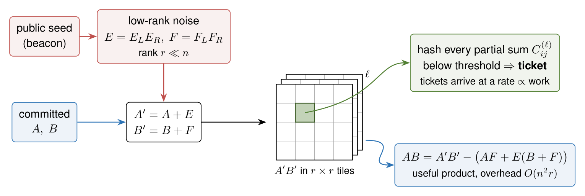

Proof of useful work for verifying AI treaties
9 October 2026
Also on Substack. Comments welcome on LessWrong and the EA Forum.
Verifying an international agreement pausing AI development needs evidence of how compute is used. Cryptography can give protocols that run in software on the chips already installed, without trusted hardware checking each computation. This post is a literature review of one such tool, proof of useful work (PoUW), with which a GPU proves that it did a given amount of work, here typically matrix multiplication. In contrast with inference verification, PoUW has been developed almost exclusively in relation to cryptocurrencies in order to use a more useful computation instead of the useless hashing used in Bitcoin. PoUW could be used to show remotely that chips are kept busy on useless tasks during an emergency shutdown, or, together with a zero-knowledge proof of the workload, that they run only declared inference.
I describe the two existing constructions, by Komargodski and Weinstein for matrices over a finite field, and by Pearl Research for the FP8 format used in AI, verifiable for now only on NVIDIA chips. For the finite-field scheme, a lower bound on the work is proven, but it covers only a fraction of what an honest prover does. The guarantee a treaty needs, at realistic matrix sizes, rests on unproven assumptions in both schemes; for Pearl, the assumption is stated only informally.
PoUW depends on knowledge of the hardware. It gives only a lower bound on work, which means little without a trusted bound on peak chip capacity and a way to tie the work to the declared chips; the floating-point scheme moreover needs a bit-exact model of each chip's arithmetic, and the true cost of the declared workload depends on the GPU it runs on. These hardware questions aside, most of the open problems are mathematical and should be amenable to AI-assisted research.
Contents
- Cryptography for verification
- How PoUW works and what it is for
- Why useful work is harder than useless work
- Komargodski–Weinstein: hiding the instance behind low-rank noise
- Pearl: quantization removes the shortcut but needs a new assumption
- Deployments and related protocols
- Deployment in a treaty
- Limitations of KW and their current status
- Open problems for mathematicians
- Outlook
- Acknowledgments
- References
Cryptography for verification
An agreement that pauses AI development, or paces the frontier, needs evidence about how declared compute is used. James Petrie's forthcoming agenda, Research Priorities for AI Compute Verification, lists many kinds of evidence. Here, I only mention three that rest on cryptography, more specifically on zero-knowledge (ZK) proofs. These protocols could run on the chips already installed, since checking the computation needs no secure enclaves or verifier devices in the datacenter. Some trusted knowledge of the hardware may still be needed, as discussed below. If such protocols were formally verified and trusted, the first phase of a pause could keep the chips in use instead of decommissioning or retrofitting them.
- Inference verification. Show that compute runs declared inference and nothing else. This is the closest to deployment, in a regime that allows verified inference and nothing else, either through network certifiers that recompute the outputs or through zero-knowledge proofs of inference (Petrie's agenda; startup Attestable reports ZK proofs of inference for a 31B open model on a single H100, as alpha results with 8-bit integer matrix multiplications and a 16K context).
- Training verification. Show what exactly happened during a training run. At the robustness a treaty needs, this is a long shot due to the large compute overhead of current methods, but Peigné-Lefebvre, Nguyen and Wang argue that the overhead is not fundamental: committing to intermediate results on the fly and proving only randomly sampled steps brings it down to an estimated single-digit percentage.
- Proof of useful work. Show remotely that compute was occupied, with no verifier hardware on site.
The boundary between inference verification and PoUW is blurry, since both start from the observation in Petrie's agenda that "an alternative to hardware measurements is to provide the results of computations themselves as evidence of how compute is being used." The difference is that inference verification shows what was computed and says how much work this took only indirectly, under the assumption that the declared outputs could not have been produced more cheaply. Because the prover chooses the inputs, this assumption fails for easy instances, for example repeated prompts or cached prefixes.
PoUW gives the lower bound on work directly. Noise derived from a public seed prevents the prover from choosing easy instances, so the results themselves certify how much work they required. The current schemes, however, cover only matrix multiplication, whereas inference verification also has to deal with the nonlinear layers. These layers (softmax, GELU, normalization) are not polynomial operations, and ZK provers typically check them against precomputed tables using lookup arguments.
One key limitation of PoUW schemes is that they do depend on knowledge of the prover's hardware, because they give only a lower bound on the work performed. Without a trusted bound on the peak capacity of the chips, a prover could run provable work on part of the capacity and use the rest for something else. Petrie discusses obtaining the bound from circuit counts, by destructive and non-destructive testing of randomly sampled chips, and from analog sensors measuring clock rate, power and heat during operation, which address overclocking. Even with such a bound, a second gap remains. LLM inference uses the matmul circuits at only about 40 to 90% of peak, so a prover whose declared workload seems to use the hardware fully may in fact have spare capacity. The overhead of PoUW can be turned into a feature that closes this gap (h/t Paul Wang): provable useless work running alongside the declared workload can fill up compute and memory bandwidth, leaving no room for a covert workload. The price is lower throughput for the declared workload, which may be politically hard to accept.
How tight does the bound have to be? A slack of 5% on a fleet of 100,000 H100s is the equivalent of 5,000 chips, which in a year of training at typical efficiency deliver about \(6 \cdot 10^{25}\) FLOP.1 That is close to the \(10^{26}\) FLOP reporting threshold of the former US executive order on AI, and a few percent of the \(10^{27}\) FLOP that Epoch AI estimates for GPT-6 Astra. Accounting for algorithmic improvement, the certified work has to cover at least 90% of the true capacity, and for the largest provers probably 98% or more (h/t Paul Wang). Joshua Clymer arrives at a similar threshold from a different direction. If covert data centers may hold about 5% of a developer's compute, the developer can generate RL rollouts on the declared servers and train on the covert ones, so proof of work or memory has to account for more than 95% of the computation. These fractions refer to the true peak, which is known only approximately. If the peak may be 5% higher than estimated, a prover certified at 98% of the estimated peak may in fact devote only 93% of its capacity to certified work, so for the largest provers PoUW alone cannot settle the question.
The arithmetic overstates the risk in one respect. Slack spread over many chips is less useful than the same amount concentrated on a few, since large training runs need terabytes per second of interconnect bandwidth, which network certifiers can deny by blocking any traffic they have not recorded. What matters is then less the total slack than whether it can be gathered into a cluster large enough for a training run. However, this restriction may not last. Low-communication training is improving quickly: Google DeepMind's Decoupled DiLoCo trained a 12-billion-parameter model with learners spread across four US regions, and in simulations of a 5-billion-parameter model across eight data centers it cut the bandwidth needed for 95% compute utilization from 198 Gbps to 0.84 Gbps (with int4 communication). If this trend continues, dispersed slack becomes nearly as useful as concentrated slack, and the argument loses its force (h/t Paul Wang).
PoUW does not have to close the slack alone, since other evidence can detect a covert workload. Rahman and Tajdari classify GPU workloads as training or not from the standard NVML counters (power, utilization, memory, clocks) sampled once per second, with 98% accuracy on their full corpus of workloads, and at least 99.6% against each multi-GPU evasion strategy they tested on nodes of up to 8 GPUs, even with that strategy held out of training. The case that matters here, covert training diluted into declared inference, is their hardest: it was detected 87% of the time when new to the classifier, and only 43% of the time for diluted LoRA fine-tuning designed against it. The method also assumes tamper-proof telemetry, which brings back the trusted hardware that PoUW is meant to avoid. On current evidence, PoUW is useful as one layer among several, and distributed training runs remain the main risk.
The capacity bound is of use only if the tickets come from the chips it covers. Chip attestation therefore has to be part of the protocol: each ticket must be bound to the identity of the chip that produced it, for instance by deriving the noise seed from a value signed with that chip's device key. The key has to stay secret inside the chip, which reintroduces a minimal piece of trusted hardware, and the signature should come with a timing check, as in the ping-based location attestation of Petrie's agenda, so that the prover cannot ask the declared chip to sign and do the work elsewhere.
Inference and training verification already have an active research community. (Though still a very small one, the workshop on verification for international AI agreements that the Future of Life Institute convened in Berkeley in February 2026 had about 40 participants.) PoUW, by contrast, has been discussed almost exclusively in connection with cryptocurrencies. In the context of AI governance, as far as I know, it has been mentioned only in the PoUW section of Petrie's agenda, a blog post by Attestable, and a post by Joshua Clymer. The underlying logic, showing that verified uses account for nearly all of a cluster's capacity, is known as compute accounting (Baker et al.). The AI Verification Tech Map rates PoUW for this purpose as proposed only. I present this literature review to draw attention to this aspect.
How PoUW works and what it is for
In the setting we consider, the prover controls the chips and the verifier sees only the messages the prover sends. The claim to be certified reads
during the time interval \(T\), declared chips performed at least \(W\) verifiable work, such as multiply-accumulate operations on inputs committed in advance.
PoUW borrows the lottery of classical proof of work. In Bitcoin, a miner hashes the block header again and again with a changing counter (the nonce) until the hash falls below a difficulty threshold. Since each attempt succeeds with the same small probability, a winning hash shows that, on average, a known number of attempts was made. PoUW replaces the nonce by results that the prover produces in their computation. For matrix multiplication, which a GPU carries out block by block (in tiles), these are intermediate results of the blocks. Every hash below a threshold counts as a ticket; the threshold sets the sampling rate. Since each hashed value yields a ticket with the same small probability, tickets arrive at random times, at a rate proportional to the work done (a Poisson process). The schemes discussed below differ in which values are hashed and in why there is no shortcut to computing them.
Tickets give a lower bound on work, and the relevant attack is therefore to produce tickets without doing the corresponding work, which would free capacity for a covert workload.
Petrie's agenda describes two uses for this. They use similar tools but are best treated as separate goals: neutralizing compute, and bounding the work of declared inference.
- Verifiable emergency shutdown. The chips are kept provably busy with useless work, i.e. proof of work on inputs derived from a public seed. Matrix multiplication is a better choice than hashing. Unlike for Bitcoin, specialized hardware (ASICs) should give little advantage, since matrix multiplication is what GPUs and TPUs are designed for; Petrie's agenda names this as a design goal. This protocol can work without access to the datacenter, but removes the option of simply checking that it is idle, e.g. by satellite imagery or on-site inspection.
- Declared inference only. Inference verification proves that the declared model produced the declared outputs (in zero knowledge, keeping the weights secret), but not that nothing else was computed. Tickets drawn from the same committed matrices show how much of the chips' capacity the declared workload occupied, so that, given the peak-capacity bound, little is left for a covert workload. Attestable proposes exactly this combination. Protocol changes that restrict optimizations such as caching and batching are another way to pin down how much work the declared inference requires.
Neither use removes the need for the peak-capacity bound and the chip identity attestation discussed above, which PoUW cannot provide.
Why useful work is harder than useless work
Hash-based proof of work is conceptually simple. In the random-oracle model, the only way to find a hash below the threshold is to keep trying inputs. It is hard by construction, since the inputs are random. The main drawback is that the work serves no purpose beyond showing that it was done. Scher and Thiergart list it as a way to confirm that declared compute indeed does crypto mining.
What makes PoUW harder is that we need to allow the miner to choose the inputs. The miner may exploit this by choosing easy ones; multiplying two zero matrices, for instance, requires no work at all. A PoUW scheme must therefore ensure that no choice of inputs makes tickets cheaper than the prescribed work, while keeping the honest miner's overhead negligible at \(1 + o(1)\). The matrix schemes perturb the miner's inputs with noise derived from a public seed; since the seed is new each time, nothing can be computed in advance. Allowing a constant-factor overhead would make the problem trivial, since one could simply solve the useful instance and run an ordinary hash-based proof of work on top of it.
The first formal definition ran into roughly this problem. Ball, Rosen, Sabin and Vasudevan introduced proofs of useful work in 2017 (ePrint 2017/203), based on the fine-grained hardness of problems such as orthogonal vectors, 3SUM and all-pairs shortest paths. However, the reviewers pointed out that the definition "is already satisfied by a generic naive construction", and the updated version, Proofs of Work from Worst-Case Assumptions (CRYPTO 2018), no longer claims usefulness. As Komargodski and Weinstein explain, the 2017 scheme required the prover to solve polylogarithmically many instances of the problem to convince the verifier that a single one was solved.
The idea of committing to intermediate states is older than PoUW. Monrose, Wyckoff and Rubin (NDSS 1999) let volunteer-computing workers commit to execution traces, which the verifier spot-checked by re-executing randomly chosen segments. Proofs of sequential work (Mahmoody, Moran, Vadhan 2013) and Proof-of-Learning (Jia et al. 2021, spoofed the following year) follow the same pattern. Lotteries tied to useful computation also predate the matrix schemes. Ofelimos (Fitzi, Kiayias, Panagiotakos, Russell, CRYPTO 2022) seeds each step of a local search with a hash and hashes its result, so that "the computation cannot be cut short", and comes with a full security analysis. Shoker's Proof of eXercise (IEEE NCA 2017) already observed that multiplying by the identity matrix is trivial and proposed checking the inputs before an exercise is accepted, an early version of the statistical checks in the Pearl scheme discussed below. Compared with this earlier work, the contribution of Komargodski and Weinstein is to draw the tickets from the transcript of matrix multiplication, and to use cheaply removable noise that forces the prover to do nontrivial work even for trivial instances.
Komargodski–Weinstein: hiding the instance behind low-rank noise
The finite-field construction appears in Komargodski and Weinstein, Proofs of Useful Work from Arbitrary Matrix Multiplication (v4; ePrint 2025/685; versions 1 to 3 also list Itamar Schen). I abbreviate it as KW.
Suppose the miner wants to compute \(AB\) for \(n \times n\) matrices over a finite field \(\mathbb{F}_q\) of its choice. After committing to them, it derives two noise matrices of rank \(r\) from the seed, \(E = E_L E_R\) and \(F = F_L F_R\), and multiplies the noised matrices \(A' = A + E\) and \(B' = B + F\). The useful product is then recovered by subtracting the correction
\[AB = A'B' - \big(AF + E(B + F)\big).\]
Calculating the correction requires \(O(n^2 r)\) operations, which for \(r \ll n\) means \(1 + o(1)\) overhead.
The output alone cannot serve as the proof of work, since for \(A = B = 0\) the noised product is \(EF\), which can be computed in \(O(n^2 r)\). KW therefore propose to hash the transcript of the computation, i.e. all the \(r \times r\) block partial sums \(C^{(\ell)}_{ij}\) of the multiplication algorithm. Their Assumption 6.4 states that computing all these intermediate values for a product of random rank-\(r\) matrices takes time \(\Omega(n^{\omega_r + 1}/r)\), where \(n^{\omega_r}\) is the cost of multiplying an \(n \times r\) by an \(r \times n\) matrix.

The bound \(n^{\omega_r+1}/r\) is achieved using fast matrix multiplication, the line of algorithms started by Strassen. For \(r \le n^{0.32}\), where \(\omega_r = 2\), the assumption is in fact a theorem, as KW note: the transcript has \(n^3/r\) entries, and writing them down already takes that long. But this bound is a factor \(r\) below the work of the honest miner (\(n^{2.7+o(1)}\) against \(n^3\) for \(r = n^{0.3}\)) and hides an unspecified constant, so it guarantees little about the work actually done.
A treaty needs a concrete bound at practical sizes, where the constants favor the honest miner: fast matrix multiplication trades multiplications for additions and pays off only for large matrices. At \(r = 32\), one level of Strassen's algorithm on each block saves at most 7% of the operations, and tensor cores cannot exploit even that (h/t Pierre Godfard).2 This leaves a constant-factor slack comparable to the uncertainty about peak capacity, but it rests only on the absence of known faster algorithms.3 KW leave open whether a PoUW with a Strassen-like baseline exists.
The paper states three open problems: tasks beyond matrix multiplication (Problem 3.1), better matrix-multiplication PoUW with lower overhead or weaker assumptions (Problem 3.2), and, new in v4, PoUW from standard, well-studied assumptions (Problem 3.3).
Assumption 6.4 says how long it takes to compute one transcript. In a treaty, however, the prover computes many of them, and might save work by reusing parts of one computation in the next. KW treat the stream of tickets in an appendix, but nobody has yet shown that this kind of reuse does not help (open problem 2 below). The closest result is by Ball et al. (2018), who proved for their own proofs of work that solving many instances together is not substantially cheaper than solving them one by one.
Version 4 of the paper formalizes a second scheme, sketched in earlier versions, that avoids denoising by rotating the inputs: \(A' = AR\) and \(B' = R^\top B\) with a pseudorandom orthogonal matrix \(R\) derived from the seed. The rotation cancels in the output, \(A'B' = AB\), but is meant not to cancel in the partial sums of the tiles. For fast rotations, such as the randomized Hadamard transform of Ailon and Chazelle, it costs only \(O(n^2 \log n)\) because the fast Walsh–Hadamard transform rotates each of the \(n\) rows in \(O(n \log n)\). Conjecture A.1 states that for full-rank \(A\) and \(B\), computing all partial sums costs \(\Omega(r^3)\) per partial sum, even after \(O(n^3)\) preprocessing. The algorithm that KW give in Appendix A takes \(R = H_n D\), where \(H_n\) is a Hadamard matrix and \(D\) a random block-diagonal matrix with \(\pm 1\) entries. As specified, the random signs sit next to the summation index, so whenever the rotation cancels in the output, it also cancels in every partial sum, which then do not depend on the seed. The authors confirmed this and noted that the scheme was an exploratory proposal, never implemented; Pearl's protocol has since moved to the floating-point scheme described below. The idea of pseudorandom rotations itself seems sound. Placing the random signs between two Hadamard layers, \(R = H_n D_1 H_n D_2\), avoids this cancellation at the same cost, but it remains unclear whether the partial sums are hard to compute.
For the treaty, the most useful idea of KW is the low-rank noise: it is derived from a seed, cheap to remove, and takes away the prover's freedom to choose easy instances. The transcript is less convenient. Proving a single ticket in zero knowledge is cheap, but with secret weights the hashed values must also be tied to the proof of the workload, and the block partial sums are values that zkML proofs do not otherwise produce (see Deployment in a treaty). Moreover, KW work over a finite field, while inference runs in floating point. Pearl, the blockchain project discussed next, keeps the noise but drops the transcript.
Pearl: quantization removes the shortcut but needs a new assumption
In 2025 Weinstein co-founded Pearl Research Labs, where Komargodski also works; the company runs a blockchain on a modified version of their protocol. In September 2026 the company published the Pearl Floating Point Scheme Specification. Its unit of work is FP8 (E4M3) matrix multiplication on whitelisted GPUs.
The miner first adds the noise and then quantizes,
\[\tilde C = Q(A + N_A)\, Q(B + N_B)^\top,\]
where \(Q\) is entrywise quantization to FP8 and \(N_A\), \(N_B\) are seed-derived noise matrices of rank \(r\). The useful output \(\hat C = \tilde C - A N_B^\top - N_A B^\top - N_A N_B^\top\) is accurate to FP8 precision (in this idealized form; the concrete scheme also undoes a per-row scaling). Since \(Q\) is nonlinear, \(Q(N_A)\) can have much higher rank than \(N_A\), and the shortcut on the output is meant to disappear; this is what Assumption 1 below asserts. Tickets can therefore hash the output tiles directly, and the verifier recomputes a winning tile bit for bit.
Security rests on Assumption 1: with high probability over random \(r\)-dimensional subspaces, computing \(Q(N_A) Q(N_B)^\top\) with rows drawn from these subspaces is on average "not substantially easier" than a generic quantized product \(Q(A)Q(B)\) of the same size.
The assumption, which the whitepaper itself calls informal, gives no explicit bounds: "not substantially easier" and "on average" are left unquantified. The whitepaper gives neither a reduction nor evidence beyond the design reasoning, and I am not aware of any published cryptanalysis, though no attack is known either. The assumption also concerns only \(A = B = 0\). Against inputs built deliberately to make the product easy, security rests on a "jackpot policy" of statistical checks on the miner's inputs (entry liveness, a noise floor, tamed products, unpredictable summands) with heuristically chosen constants. For useless work on seed-derived inputs, as in an emergency shutdown, the jackpot policy is not needed. The whitepaper also lists seed grinding among the known speedups and argues that it is bounded.
Bit-exact recomputation requires an exact model of each device's matrix arithmetic, including rounding, subnormal numbers, accumulator width, and the grouping and order of summation. For NVIDIA GPUs, Badash, Boneh, Komargodski and Srivastava (Pearl Research and Stanford) built such a model, called Hawkeye (MLSys 2026). Since NVIDIA does not document these details, the model was reverse-engineered by black-box tests; it reproduces Tensor Core products bit for bit on a CPU for the Ampere, Ada Lovelace and Hopper generations, and the whitepaper adds Blackwell. As far as I know, no similar model exists for TPUs, Trainium or Maia. A treaty has to cover these chips as well, so every new generation would require either vendor cooperation or reverse engineering in the style of Hawkeye.
The integer protocol does not have this problem, because integer matrix multiplication is bit-exact on any hardware as long as the accumulator does not overflow. Basu (arXiv:2606.04819, Sec. 4.7) obtained pool-accepted shares for the integer protocol deployed by Pearl on both NVIDIA and AMD GPUs. By moving to FP8, Pearl thus gives up running on any hardware in exchange for using the floating-point kernels that AI workloads already use. In systolic arrays such as TPUs, the dataflow fixes the accumulation order within the array; whether this makes them easier to model than GPU kernels is an open question. Inference verification by recomputation faces the same gap, since bit-exact recomputation of a forward pass needs exact models of both the matrix multiplications and the nonlinear kernels.
Pearl reports an overhead of about 4 to 5% on LLM inference (blog: +5.08% for Llama 70B, +3.9% for DeepSeek V3.2), measured on the integer scheme. Basu (arXiv:2606.04819, Sec. 4.6) estimates, without a measurement, that coupling inference with mining costs 10 to 30% of the hashrate, which suggests that the overhead is not negligible for a miner. The whitepaper also specifies an extension to mixture-of-experts models and a zero-knowledge verifier.
Basu's study also shows how the deployed network behaves in practice. The dominant miner binary contains no inference code, and verification accepts random matrices, which is documented behavior of the integer protocol. This is what one should expect. The word "useful" in PoUW means that the certified work can be a useful computation at negligible overhead, not that the protocol checks that it is one. To certify that it is, the tickets have to be bound to a proof of the workload, as discussed above.
Deployments and related protocols
BTX is a live blockchain that uses matrix multiplication over \(\mathbb{F}_{2^{31}-1}\) as its proof of work, with inputs derived from seeds in the block header; according to its specification, the construction is derived from KW. The computation is not externally useful (the specification calls it "a GPU compute benchmark"), so it is closer to the protocol for shutdown.
Attestable's Pacing AI Requires Proof is, as far as I know, the only concrete proposal besides Petrie's agenda to use PoUW for compute governance. It combines ZK proofs that the declared workload follows the rules with PoUW, which bounds how much capacity is left for anything else.
Monfared et al. (arXiv:2602.09369) propose and evaluate four software-only probes that measure how much a GPU is computing without trusting its hardware: memory-hard proof of work, matrix-multiplication challenges, verifiable delay functions and a memory probe. All of them rely on timing. The verifier sends fresh random challenges and infers the available compute from how quickly the answers come back. Their matrix challenge is an interactive variant of useless work, in which the verifier chooses the matrices, times the answer and checks the product cheaply. Since the verifier picks the inputs, the noise and tickets of KW are not needed.
Their memory probe comes closest to the PoUW based on memory bandwidth suggested in Petrie's agenda, in which the prover hashes the data that its workload loads into cache. A challenge data block is stored in GPU memory beforehand; at random times the verifier sends fresh nonces, the GPU returns a memory-hard hash (Argon2id) that mixes in the stored block, and a slow answer shows that the data was moved off the chip. The memory is thus occupied by useless data. Cankaya's system overview for MIRI (Sec. 5.1.2) proposes the same for all of a server's memory: fill DRAM and HBM with incompressible noise and challenge random samples, telling local from remote memory by response time (about 100 nanoseconds for local DRAM against one to two microseconds over RDMA). I am not aware of a variant that uses the workload's own memory traffic. Petrie's agenda also proposes a memory-state challenge. The verifier asks for \(y = f(x, \mathrm{nonce})\) over the claimed contents \(x\) of high-bandwidth memory, where \(f\) requires so much memory bandwidth and matrix multiplication that it "cannot easily be served by anything other than a GPU". The function \(f\) also uses many hashes to occupy the general-purpose compute that could otherwise decompress weights stored in compressed form.
Deployment in a treaty
Based on the sources, PoUW would fit into a verification stack as follows.
- Prover. The Pearl miner commits to its operands with Merkle trees, derives the seeds from the commitments and a public beacon, adds noise and quantizes in \(O(n^2 r)\) operations, runs the usual matrix-multiplication kernel on the noised operands, scans the output tiles for tickets, and finally removes the noise. This requires modified GPU software (matrix-multiplication kernels that inject the noise and hash the tiles), but no new or modified hardware.
- Challenge channel. On a blockchain the seeds come from the chain tip, while in a treaty they would come from the verifier, either as a randomness beacon or through the network certifier or challenge device from Petrie's agenda. The latency and rate of this channel determine how finely the work can be accounted for.
- Verifier. The verifier recomputes one winning tile bit for bit, an amount of work independent of the size of the prover's job. The list of whitelisted devices is part of the protocol.
- Composition with ZK. The Pearl whitepaper verifies a ticket in zero knowledge, keeping the operands secret, but does not prove that they are the matrices of the declared inference. Without this link, the tickets bound work on some matrices and the zkML proof says which model ran but not at what cost, so all inference capacity remains suspect. With it, the tickets bound the work of the inference itself at \(1 + o(1)\) overhead and, as the seeds come from a beacon, also time-stamp it.
- Accounting. The verifier sees only the tickets, so the evidence is statistical and accumulates over time. For an honest miner, and modeling the hash as a random oracle, each tile yields a ticket independently with the same small probability, so the number of tickets is approximately Poisson distributed with mean proportional to the work, and the work estimate after \(N\) tickets has a relative error of about \(1/\sqrt N\).
Proving a single ticket in zero knowledge is cheap, since it concerns one tile. The difficulty lies in the link. A ticket hashes values that a zkML proof (for example zkLLM or Kang et al.) does not otherwise contain: the block partial sums in KW, and the output tiles of the noised product in Pearl. The workload proof would therefore have to cover the noising and the noised product, or the hashed values would have to be committed separately and tied to it, at a cost that depends on how the proof system handles matrix products. With open weights and public inputs, as in a regime of published training runs (Kokotajlo et al., AI 2040: Plan A, AI Futures Project, 2026), no ZK proof is needed, tickets can be checked by recomputation, and the problem disappears.
Limitations of KW and their current status
Petrie's agenda lists four limitations of KW, in addition to the prerequisite of a capacity bound. The table shows where all five stand according to the sources discussed above.
| Limitation | Status after the 2026 sources |
|---|---|
| Unproven low-rank hardness | Proven asymptotically for small \(r\) (output-size bound, as KW note), but a factor \(r\) below the honest work; concrete hardness at practical sizes still open. Pearl replaces it by a different unproven assumption, stated informally. |
| No floating point | Addressed by Pearl (FP8, bit-exact through Hawkeye), under the new assumption and a heuristic input policy, and for NVIDIA only. |
| Overhead untested | Pearl reports about 4 to 5% on LLM inference, BTX 10 to 16.5% for its useless variant. Vendor numbers, not independent. |
| Attention shapes | Not addressed. Pearl requires an inner dimension \(1024 \le k \le 2^{16}\) (with \(r = 32\)). This excludes the attention scores \(QK^\top\), whose inner dimension is the head dimension (128 in Llama 3), unless they are padded at eight times the cost, and admits the product with \(V\) only for contexts of at least 1024 tokens. Pearl adds mixture-of-experts support. |
| Peak-capacity bound | Outside the scope of this post. It is a hardware question, as is tying the work to the declared chips; Petrie's agenda discusses chip sampling and analog sensors for it (see above). |
Open problems for mathematicians
Pearl Research keeps its own list of open problems, the Pearl Polymath Project, which focuses on the use for blockchain; Problem 3 below is its problem (1).
- Concrete hardness for KW. Assumption 6.4 holds asymptotically for small \(r\), but only up to a factor \(r\) below the honest work. Show that at practical sizes the transcript cannot be computed substantially faster than block by block, for example by lower bounds in restricted models (bilinear algorithms, cost models of tensor cores), or else construct PoUW from standard assumptions (KW's Problem 3.3).
- Many challenges at once. Assumption 6.4 concerns a single transcript. Show that it implies that a prover answering a long stream of challenges cannot get more tickets per unit of work by reusing computation between them (a non-amortization result, as Ball et al. (2018) proved for their proofs of work), or else assume this directly, as Conjecture A.1 does. This matters only for the concrete bound: the asymptotic bound cannot be beaten this way, since every transcript has to be written down.
- The self-canceling scheme. Find a fast pseudorandom rotation, for instance with the random signs between two Hadamard layers, for which a version of Conjecture A.1 holds. The scheme also needs a condition on the inputs that stops the prover from choosing \(A\) to undo the fixed part of the rotation (full rank is not enough), and a cheap test, ideally a SNARK, that the committed matrices satisfy it.
- A formal version of Assumption 1 of Pearl. A first step would be to understand the structure of entrywise-quantized random low-rank matrices (rank, spectrum, distance to low rank) and of the product of their rounding errors.
- Soundness of the jackpot policy. Do the statistical checks exclude every input that makes tiles predictable, and with what constants?
- Other workloads. PoUW for attention-shaped products and for memory-bound work, and challenges that saturate memory bandwidth and compute at the same time, so that no capacity is left for decompression or covert work, including simple always-on programs whose execution the verifier checks by sampling (h/t Paul Wang).
- Composition. Combine PoUW tickets with a ZK proof that the committed matrices are the declared workload, as one protocol with one security statement.
Problems 3 to 5 seem the most tractable. Problems 4 and 5 concern a fixed, explicitly specified scheme, and Problem 3 a small family of candidate rotations; progress can come as a proof or as an attack that can be tested numerically.
On the other hand, Problems 1, 2 and 6 depend on hardware: hardness has to be measured in the cost model of real chips, where operation counts and running time can differ substantially (h/t Pierre Godfard). All of them are useful only together with a bound on peak capacity, attestation that the work runs on the declared chips, and the true cost of the declared inference. These bottlenecks need as much work as the problems above. Caching and batching can push the true cost of inference well below its nominal FLOP count (h/t Paul Wang).
Outlook
Without verifier hardware in the datacenter, PoUW would, in Petrie's words, largely remove "both the prover's and the verifier's security concerns". KW's construction already runs on blockchains, and a floating-point version is specified. The security of KW at practical sizes rests on the belief that fast matrix multiplication pays off only asymptotically, and that of Pearl on an informal assumption; as far as I know, neither has been studied beyond the two papers.
In my reading, this is a severely understudied area. If the hardware questions, bounding the peak output of deployed chips and attesting their identity, are solved, PoUW and inference verification could form the backbone of the verification protocols needed for an international treaty to pause AI development, a key component of the plan to deal with existential risks posed by AI.
Because most of the open problems here are mathematical in nature, I expect them to be amenable to AI-assisted research given its recent progress. I am convinced that this area, as well as verification of LLMs and other software in general, merits more attention from mathematicians and funders.
Acknowledgments
I thank James Petrie for permission to cite his draft agenda; Paul Wang for discussions that shaped the distinction between neutralizing compute and bounding the work of inference, and the idea of using overhead as a feature; and Pierre Godfard for detailed comments on the draft.
AI use: Claude (Opus 5.5) helped me search the literature. I drew up the outline together with Claude and revised it after reading the papers. Claude then wrote a first draft, which I modified and edited into the present text. Claude also spotted the problem with the rotation scheme in KW's Appendix A and checked it numerically, and drew the diagram of the KW scheme. Any errors are mine.
References
Papers
- N. Ailon, B. Chazelle, The Fast Johnson–Lindenstrauss Transform and Approximate Nearest Neighbors, SIAM J. Comput. 39 (2009), 302–322, doi:10.1137/060673096.
- J. Alman, V. Vassilevska Williams, Truly Subquadratic 3SUM and Truly Subcubic APSP via Triangles in Sparse Lopsided Graphs, 2026, arXiv:2610.06783.
- E. Badash, D. Boneh, I. Komargodski, M. Srivastava, Hawkeye: Reproducing GPU-Level Non-Determinism, MLSys 2026, arXiv:2603.20421.
- M. Baker, G. Kulp, O. Marks, M. Brundage, L. Heim, Verifying International Agreements on AI: Six Layers of Verification for Rules on Large-Scale AI Development and Deployment, 2025, arXiv:2507.15916.
- M. Ball, A. Rosen, M. Sabin, P. N. Vasudevan, Proofs of Useful Work, IACR ePrint 2017/203, 2017.
- M. Ball, A. Rosen, M. Sabin, P. N. Vasudevan, Proofs of Work from Worst-Case Assumptions, CRYPTO 2018, IACR ePrint 2018/559.
- A. Basu, The Usefulness Gap in Proof-of-Useful-Work: An Empirical Study of Pearl's cuPOW Protocol, 2026, arXiv:2606.04819.
- J.-G. Dumas, C. Pernet, A. Sedoglavic, A non-commutative algorithm for multiplying 4x4 matrices using 48 non-complex multiplications, 2025, arXiv:2506.13242.
- C. Fang, H. Jia, A. Thudi, M. Yaghini, C. A. Choquette-Choo, N. Dullerud, V. Chandrasekaran, N. Papernot, Proof-of-Learning is Currently More Broken Than You Think, 2022, arXiv:2208.03567.
- M. Fitzi, A. Kiayias, G. Panagiotakos, A. Russell, Ofelimos: Combinatorial Optimization via Proof-of-Useful-Work. A Provably Secure Blockchain Protocol, CRYPTO 2022, IACR ePrint 2021/1379.
- J. Huang, C. D. Yu, R. A. van de Geijn, Implementing Strassen's Algorithm with CUTLASS on NVIDIA Volta GPUs, 2018, arXiv:1808.07984.
- H. Jia, M. Yaghini, C. A. Choquette-Choo, N. Dullerud, A. Thudi, V. Chandrasekaran, N. Papernot, Proof-of-Learning: Definitions and Practice, IEEE S&P 2021, arXiv:2103.05633.
- D. Kang, T. Hashimoto, I. Stoica, Y. Sun, Scaling up Trustless DNN Inference with Zero-Knowledge Proofs, 2022, arXiv:2210.08674.
- I. Komargodski, O. Weinstein, Proofs of Useful Work from Arbitrary Matrix Multiplication, v4, arXiv:2504.09971, IACR ePrint 2025/685.
- M. Mahmoody, T. Moran, S. Vadhan, Publicly Verifiable Proofs of Sequential Work, ITCS 2013, Harvard DASH.
- S. K. Monfared, F. Ganji, D. Holcomb, S. Tajik, Timing and Memory Telemetry on GPUs for AI Governance, 2026, arXiv:2602.09369.
- F. Monrose, P. Wyckoff, A. Rubin, Distributed Execution with Remote Audit, NDSS 1999.
- A. Novikov et al., AlphaEvolve: A coding agent for scientific and algorithmic discovery, 2025, arXiv:2506.13131.
- P. Peigné-Lefebvre, K. Nguyen, P. Wang, Zero knowledge verification for frontier AI training is possible, 2026, arXiv:2606.05433.
- R. Rahman, S. Tajdari, Detecting Hidden ML Training With Zero-Overhead Telemetry, 2026, arXiv:2606.19262.
- A. Scher, L. Thiergart, Mechanisms to Verify International Agreements About AI Development, MIRI, 2025, arXiv:2506.15867.
- A. Shoker, Sustainable blockchain through proof of exercise, IEEE NCA 2017, pp. 393–401, doi:10.1109/NCA.2017.8171383.
- V. Strassen, Gaussian elimination is not optimal, Numerische Mathematik 13 (1969), 354–356, doi:10.1007/BF02165411.
- H. Sun, J. Li, H. Zhang, zkLLM: Zero Knowledge Proofs for Large Language Models, CCS 2024, arXiv:2404.16109.
Specifications, agendas and blog posts
- Attestable, Pacing AI Requires Proof, blog post.
- Attestable, Proving LLMs at Scale, blog post, August 2026.
- BTX, MatMul PoW specification.
- N. Cankaya, All hands on deck to build the datacenter lie detector, LessWrong, February 2026.
- N. Cankaya, A System Overview for Near-Term, Low-Trust AI Compute Verification, MIRI working paper, June 2026.
- J. Clymer, Can governments quickly and cheaply slow AI training?, AI Alignment Forum, March 2026.
- D. Kokotajlo et al. (AI Futures Project), AI 2040: Plan A, 2026.
- Pearl Research, Pearl Floating Point Scheme Specification, whitepaper, September 2026.
- Pearl Research, Proof of Useful Work, blog post.
- Pearl Research, Pearl Polymath Project, list of open problems, accessed September 2026.
- J. Petrie, Research Priorities for AI Compute Verification, draft of 31 August 2026, forthcoming.
- Strategic Stability Alliance, Proofs of useful work for capacity accounting, AI Verification Tech Map, September 2026.
-
\(5{,}000 \times 989\) TFLOP/s (dense BF16 peak of the H100) \(\times\ 40\%\) utilization \(\times\ 3.16 \cdot 10^7\) s \(\approx 6.2 \cdot 10^{25}\) FLOP; utilization between 30 and 50% gives \(4.7\) to \(7.8 \cdot 10^{25}\). ↩
-
Counting multiplications and additions separately, the naive \(r \times r\) product costs \(2r^3 - r^2\) operations, and one level of Strassen's algorithm with naive half-size products costs \(7\big(2(r/2)^3 - (r/2)^2\big) + 18(r/2)^2\), that is, 64,512 against 60,160 at \(r = 32\). Counting a fused multiply-add as one operation, the costs are \(r^3\) and \(7(r/2)^3 + 18(r/2)^2\), so Strassen's algorithm loses 1.6% at \(r = 32\). The gain grows only slowly with \(r\) (about 12% at \(r = 1024\)). On GPUs, Huang, Yu and van de Geijn report speedups of up to 11% with one level of Strassen's algorithm for matrices above about 1,500, and 19% with two levels above about 7,700. AI-assisted search has improved small schemes: AlphaEvolve found in 2025 a \(4 \times 4\) scheme with 48 multiplications over the complex numbers (a rational version is in arXiv:2506.13242). Against the 49 multiplications of two levels of Strassen's algorithm, this saves about 2%, which does not change the picture. The slack also matters only for KW's exact finite-field scheme. In the Pearl scheme, which is verified by bit-exact recomputation of FP8 tiles, a fast algorithm changes the rounding and fails verification, unless it reproduces the pinned accumulation order exactly. ↩
-
How fragile such beliefs can be was shown when Alman and Vassilevska Williams (arXiv:2610.06783) refuted the long-standing 3SUM and APSP hypotheses of fine-grained complexity with a fast matrix multiplication algorithm that computes a sparse set of entries of a thin product faster than writing the product down. Claude found the algorithm while probing cryptographic constructions based on fine-grained hardness. It does not make tickets cheaper, since the saving needs a sparse set of entries, but it refutes the hypotheses on which the 3SUM and APSP instantiations of Ball et al. rest. ↩